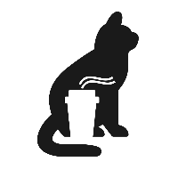

Nisshoku kafe

Cafe hecho totalmente con sifones japoneses
El sifón japonés es el método de extracción se originó en Alemania, pero es muy usado en Japón. La elaboración del café lleva más tiempo en un sifón, pero es un deleite participar de esta preparación casi ceremonial.